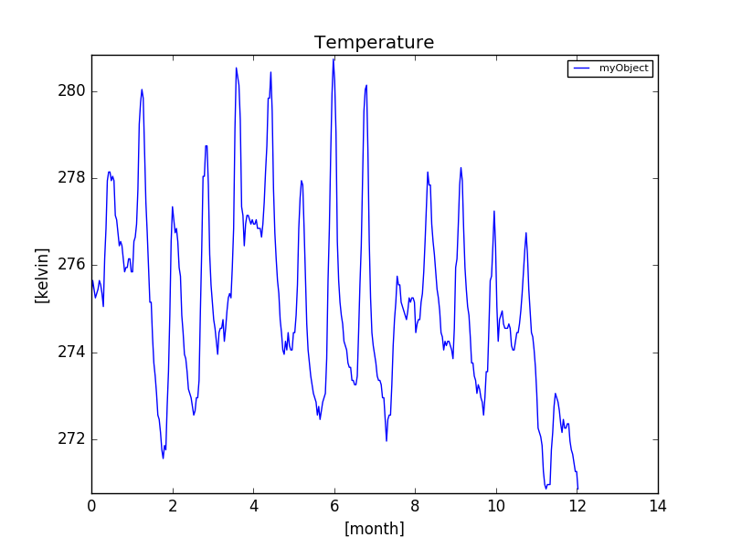

4. The Simulation Tools¶
The following section describes the tools provide by Gridsim to develop in a better way.
This page contains information about:
4.1. Time series¶
Module author: Gillian Basso <gillian.basso@hevs.ch>
Code author: Michael Clausen <clm@hevs.ch>
Code author: Gillian Basso <gillian.basso@hevs.ch>
The gridsim.timeseries module allows to import time series based on data Reader as attributes.
The data are translated into attributes of the TimeSeries by calling the TimeSeries.load() method on a TimeSeriesObject or any subclass of it:
obj = TimeSeries()
obj.load('../../data/examples/example.csv')
This will call the gridsim.iodata.input.Reader.load() function and process the data to simplify the access from the simulator.
It is important to have a time data or to identify the data representing the time.
If the data contain a temperature data, it can be access with:
1 2 3 4 5 6 7 8 9 10 11 12 13 14 | from gridsim.unit import units
from gridsim.iodata.input import CSVReader
from gridsim.timeseries import TimeSeriesObject
# Load time series into a new object.
obj = TimeSeriesObject(CSVReader())
obj.load('./data/example.csv')
# Print value at start time.
print obj.temperature
# Proceed 120 and output the temperature at that moment.
obj.set_time(120*units.second)
print obj.temperature
|
This would give an output like this:
18.5 kelvin
- class gridsim.timeseries.TimeSeries(self, reader)¶
Bases: object
The time series objects allows to process data from Reader into a time series and allows to access these in a very simple way by providing them as attributes.
Example:
from gridsim.unit import units from gridsim.core import AbstractSimulationElement, AbstractSimulationModule from gridsim.simulation import Simulator from gridsim.recorder import PlotRecorder from gridsim.timeseries import TimeSeriesObject from gridsim.iodata.input import CSVReader from gridsim.iodata.output import FigureSaver # Create own simulation element and module and # register them within the simulator. class MyObject(AbstractSimulationElement): def __init__(self, reader, file_name): super(MyObject, self).__init__(file_name) self._time_series = TimeSeriesObject(reader) self._time_series.load(file_name, time_converter=lambda t: t*units.day) self._time_series.compute_data() def __getattr__(self, item): return getattr(self._time_series, item) def reset(self): pass def calculate(self, time, delta_time): pass def update(self, time, delta_time): self._time_series.set_time(time) def convert(self, item, converter): return self._time_series.convert(item, converter) class MyModule(AbstractSimulationModule): def __init__(self): self._elements = [] super(MyModule, self).__init__() def add(self, element): self._elements.append(element) return element def attribute_name(self): return 'my' def all_elements(self): return [] def reset(self): pass def calculate(self, time, delta_time): pass def update(self, time, delta_time): for el in self._elements: el.update(time, delta_time) Simulator.register_simulation_module(MyModule) # Create a simulator, add an element and record the temperature signal using # a recorder. sim = Simulator() obj = sim.my.add(MyObject(CSVReader(), './data/example_time_series.csv')) obj.convert("temperature", lambda t: units(t, units.degC)) rec = PlotRecorder('temperature') sim.record(rec, obj) print("Running simulation...") sim.run(units.year, units.day) print("Saving data...") FigureSaver(rec, "Temperature").save('./output/timeseries2-example.png')
The result of the script:
- map_attribute(self, name, mapped_name, is_time_key=False)¶
If the attribute name of the file does not match the target attribute name for the object, you can use this method to map the original name to a new attribute name.
Warning
The old mapping will be removed.
Example:
obj.map('temp', 'temperature')
The example will change the name of the attribute mapped to the data column from ‘temp’ to ‘temperature’.
Warning
the old value is delete from the TimeSeries
Parameters: - name (str) – Original name of the attribute/column.
- mapped_name (str) – New name for the attribute.
- is_time_key (bool) – should be True if the modified name is the time key.
- convert(self, item, converter)¶
Convert each element of the list mapped by item with the convert function.
Parameters: - item (str) – the key of the list to convert
- converter (function) – the conversion function
- set_time(*args, **keywords)¶
- load(*args, **keywords)¶
- class gridsim.timeseries.TimeSeriesObject(*args, **keywords)¶
Bases: gridsim.timeseries.TimeSeries
This class is the standard time series implementation with no assumption about data.
This class has a TimeSeriesObject.compile_data() function to optimize the process but is still slow.
- map_attribute(self, name, mapped_name, is_time_key=False)¶
See also
Parameters: - name (str) – Original name of the attribute/column in CSV file.
- mapped_name (str) – New name for the attribute.
- set_time(self, time=0*units.second)¶
Changes the actual time on the object.
Parameters: time (time, see gridsim.unit) – the new time.
- load(self, stream, time_converter=None, time_key='time')¶
Parameters: - stream –
- time_converter –
- time_key –
Returns:
- compute_data(self)¶
Computes data, after a call of TimeSeriesObject.load().
- class gridsim.timeseries.SortedConstantStepTimeSeriesObject(self, reader)¶
Bases: gridsim.timeseries.TimeSeries
This class is a time series with a constant time step between each data.
- map_attribute(self, name, mapped_name, is_time_key=False)¶
See also
Parameters: - name (str) – Original name of the attribute/column in CSV file.
- mapped_name (str) – New name for the attribute.
- set_time(*args, **keywords)¶
- load(*args, **keywords)¶
4.2. Decorators¶
Module author: Gillian Basso <gillian.basso@hevs.ch>
Gridsim decorators module. Defines all decorators used in the Gridsim simulator.
- gridsim.decorators.timed()¶
This decorator can be used to register the execution time of class methods.
Example:
class MyClass(object):
@timed
def my_short_func(arg1, arg2):
return arg1 * arg2
@timed
def my_long_func(arg1, arg2):
# long section of code
...
Warning
This decorator only works with class methods and not with functions.
At the end of the execution, the console prompt the time for each function:
Function MyClass.my_short_func 1 times. Execution time max: 0.0000119, average: 0.0000119 Total time: 0.0000119
Function MyClass.my_long_func called 13 times. Execution time max: 0.0001291, average: 0.0001177 Total time: 0.0015298
- gridsim.decorators.accepts()¶
Type Enforcement. Verifies types of parameters given to the function.
Example:
@accepts((0,int), (1,(int,float))) def func(arg1, arg2): return arg1 * arg2
Warning
In a class function, the current class cannot be used (e.g.: self type cannot be defined with accepts)
- gridsim.decorators.returns()¶
Type Enforcement. Verifies return type of the function.
Example:
@returns((int,float)) def func(arg1, arg2): return arg1 * arg2
- gridsim.decorators.deprecated()¶
This is a decorator which can be used to mark functions as deprecated. It will result in a warning being emitted when the function is used.
Example:
@deprecated def func(arg1, arg2): return arg1 * arg2
4.3. Utils¶
Module author: Gillian Basso <gillian.basso@hevs.ch>
Code author: Michael Clausen <clm@hevs.ch>
Gridsim util module. Defines utility classes and functions.
- class gridsim.util.Position(*args, **keywords)¶
Represents an abstract position on a three-dimensional space. The coordinate system is WGS84.
Parameters: - latitude (int, float) – North-south point location the on the Earth’s surface.
- longitude (int, float) – East-west position of a point on the Earth’s surface.
- altitude (int, float) – Altitude. We recommend to use sea level as reference.
Example:
from gridsim.util import Position # Create a point and output the coordinates. office = Position(46.240301, 7.358394, 566) print office # Create a second point. home = Position(46.309180, 7.972517, 676) # Calculate the difference between the two points. print home.distance_to(office)
Output:
Position: { latitude: 46, longitude: 7, altitude: 566 }- latitude = None¶
Specifies the north-south point location on the Earth’s surface.
- longitude = None¶
Specifies the east-west point position of on the Earth’s surface.
- altitude = None¶
Altitude, we recommend to use the WGS84’s sea level as reference.
- distance_to(*args, **keywords)¶
- Calculates the distance between two points in meters [m]. It uses the
- haversine formula to calculate the distance, so the altitude is ignored completely and the distance is calculated for booth points using the earth radius of 6371 km.
Parameters: other (Position) – The point to which the distance has to be calculated. Returns: The distance between the two points in meters [m].
- class gridsim.util.Material(self, c, p, k)¶
Warning
This class cannot be instanced directly. Use sub classes instead. Each Material must inherit this class.
This class offer simple access to constants of materials.
Example:
>>> from gridsim.util import Air >>> print Air().thermal_conductivity 0.02587 thermal_conductivity
With thermal_conductivity is W/Km, see gridsim.unit for more information.
Parameters: - c (int, float) – The thermal capacity in J/gK.
- p (int, float) – The weight of the material in g/m3.
- k (int, float) – The thermal conductivity in W/Km.
Returns: - thermal_capacity¶
The thermal capacity in [J/gK] In order to get the thermal capacity of an object, you only have to multiply this specific capacity with the object’s mass in gram:
# Calculate the thermal capacity of 1kg of air. t_cap = AIR().thermal_capacity * 1000
Returns: the thermal capacity Return type: thermal capacity, see gridsim.unit
- weight¶
The weight of the material in [g/m3].
In order to get the mass of an object, you have just to multiply this specific wight with the object’s volume in m3:
# Calculate the mass capacity of 1m3 of air. t_cap = Air().weight * 1
Note
Returns: the weight of the material Return type: weight, see gridsim.unit
- thermal_conductivity¶
The thermal conductivity in [W/Km].
In order to get the thermal conductivity of an object, you have just to multiply this specific conductivity with the object’s area in m2 and divide it with the objects thickness:
# Calculate the thermal conductivity of a window with 1m2 surface # and a thickness of 3mm. t_cond = Glass().thermal_conductivity * 1 / 0.003
Note
Source: https://www.wolframalpha.com and http://en.wikipedia.org/wiki/List_of_thermal_conductivities
Returns: The thermal conductivity Return type: thermal conductivity, see gridsim.unit
- class gridsim.util.Steel¶
Implementation of steel:
- Thermal capacity: 0.49 J/gK
- Weight: 7700000 g/m3
- Thermal conductivity 46.6 W/Km
- class gridsim.util.Stone¶
Implementation of stone:
- Thermal capacity: 0.49 J/gK
- Weight: 2515000 g/m3
- Thermal conductivity unknown (None)
- class gridsim.util.Gold¶
Implementation of gold:
- Thermal capacity: 0.13 J/gK
- Weight: 19200000 g/m3
- Thermal conductivity 317.1 W/Km
- class gridsim.util.Copper¶
Implementation of copper:
- Thermal capacity: 0.383 J/gK
- Weight: 2200000 g/m3
- Thermal conductivity 401.2 W/Km
- class gridsim.util.Petrol¶
Implementation of petrol:
- Thermal capacity: 2.14 J/gK
- Weight: 881000 g/m3
- Thermal conductivity unknown (None)
- class gridsim.util.Wax¶
Implementation of wax:
- Thermal capacity: 3.43 J/gK
- Weight: unknown (None)
- Thermal conductivity unknown (None)
- class gridsim.util.Sandstone¶
Implementation of sandstone:
- Thermal capacity: 0.92 J/gK
- Weight: 2323000 g/m3
- Thermal conductivity 2.5 W/Km
- class gridsim.util.Cobalt¶
Implementation of cobalt:
- Thermal capacity: 0.46 J/gK
- Weight: 8900000 g/m3
- Thermal conductivity unknown (None)
- class gridsim.util.Zinc¶
Implementation of zinc:
- Thermal capacity: 0.38 J/gK
- Weight: 0.38 g/m3
- Thermal conductivity 11 W/Km
- class gridsim.util.Marple¶
Implementation of marple:
- Thermal capacity: 0.88 J/gK
- Weight: 2563000 g/m3
- Thermal conductivity 2.08 W/Km
- class gridsim.util.Granite¶
Implementation of granite:
- Thermal capacity: 0.79 J/gK
- Weight: 2400000 g/m3
- Thermal conductivity 2.855 W/Km
- class gridsim.util.Silk¶
Implementation of silk:
- Thermal capacity: 1.38 J/gK
- Weight: unknown (None)
- Thermal conductivity unknown (None)
- class gridsim.util.Hydrogen¶
Implementation of hydrogen:
- Thermal capacity: 14.32 J/gK
- Weight: 69600 g/m3
- Thermal conductivity unknown (None)
- class gridsim.util.HardBrick¶
Implementation of hard brick:
- Thermal capacity: 1 J/gK
- Weight: 2403000 g/m3
- Thermal conductivity 1.31 W/Km
- class gridsim.util.Platinum¶
Implementation of platinum:
- Thermal capacity: 0.13 J/gK
- Weight: 21450000 g/m3
- Thermal conductivity 71.61 W/Km
- class gridsim.util.Aluminium¶
Implementation of aluminium:
- Thermal capacity: 0.896 J/gK
- Weight: 1522000 g/m3
- Thermal conductivity 236.9 W/Km
- class gridsim.util.ArtificialWool¶
Implementation of artificial wool:
- Thermal capacity: 1.357 J/gK
- Weight: 1314000 g/m3
- Thermal conductivity 0.049 W/Km
- class gridsim.util.Tar¶
Implementation of tar:
- Thermal capacity: 1.47 J/gK
- Weight: 1153000 g/m3
- Thermal conductivity unknown (None)
- class gridsim.util.Chromium¶
Implementation of chromium:
- Thermal capacity: 0.5 J/gK
- Weight: 6856000 g/m3
- Thermal conductivity 93.93 W/Km
- class gridsim.util.Slate¶
Implementation of slate:
- Thermal capacity: 0.76 J/gK
- Weight: 2691000 g/m3
- Thermal conductivity unknown (None)
- class gridsim.util.DryEarth¶
Implementation of dry earth:
- Thermal capacity: 1.26 J/gK
- Weight: 1249000 g/m3
- Thermal conductivity 0.864 W/Km
- class gridsim.util.Rubber¶
Implementation of rubber:
- Thermal capacity: 2.01 J/gK
- Weight: 1522000 g/m3
- Thermal conductivity 0.16 W/Km
- class gridsim.util.Concrete¶
Implementation of concrete:
- Thermal capacity: 0.75 J/gK
- Weight: 2403000 g/m3
- Thermal conductivity 1.04 W/Km
- class gridsim.util.Pvc¶
Implementation of pvc:
- Thermal capacity: 0.88 J/gK
- Weight: 1200000 g/m3
- Thermal conductivity unknown (None)
- class gridsim.util.Paper¶
Implementation of paper:
- Thermal capacity: 1.336 J/gK
- Weight: 1201000 g/m3
- Thermal conductivity 0.05 W/Km
- class gridsim.util.Graphite¶
Implementation of graphite:
- Thermal capacity: 0.71 J/gK
- Weight: 2070000 g/m3
- Thermal conductivity unknown (None)
- class gridsim.util.Iron¶
Implementation of iron:
- Thermal capacity: 0.452 J/gK
- Weight: 2500000 g/m3
- Thermal conductivity 80.43 W/Km
- class gridsim.util.Clay¶
Implementation of clay:
- Thermal capacity: 0.92 J/gK
- Weight: 1073000 g/m3
- Thermal conductivity unknown (None)
- class gridsim.util.GraphiteCarbon¶
Implementation of graphite carbon:
- Thermal capacity: 0.71 J/gK
- Weight: unknown (None)
- Thermal conductivity unknown (None)
- class gridsim.util.Salt¶
Implementation of salt:
- Thermal capacity: 0.88 J/gK
- Weight: 1000000 g/m3
- Thermal conductivity unknown (None)
- class gridsim.util.Mercury¶
Implementation of mercury:
- Thermal capacity: 0.14 J/gK
- Weight: 13534000 g/m3
- Thermal conductivity unknown (None)
- class gridsim.util.Charcoal¶
Implementation of charcoal:
- Thermal capacity: 1 J/gK
- Weight: 208000 g/m3
- Thermal conductivity unknown (None)
- class gridsim.util.Oil¶
Implementation of oil:
- Thermal capacity: 1.67 J/gK
- Weight: 942000 g/m3
- Thermal conductivity unknown (None)
- class gridsim.util.Nickel¶
Implementation of nickel:
- Thermal capacity: 0.461 J/gK
- Weight: 8666000 g/m3
- Thermal conductivity 90.95 W/Km
- class gridsim.util.Silicone¶
Implementation of silicone:
- Thermal capacity: 0.75 J/gK
- Weight: 2330000 g/m3
- Thermal conductivity 0.3 W/Km
- class gridsim.util.DryCement¶
Implementation of dry cement:
- Thermal capacity: 1.55 J/gK
- Weight: 1506000 g/m3
- Thermal conductivity unknown (None)
- class gridsim.util.Cork¶
Implementation of cork:
- Thermal capacity: 1.9 J/gK
- Weight: 240000 g/m3
- Thermal conductivity 0.0435 W/Km
- class gridsim.util.Chalk¶
Implementation of chalk:
- Thermal capacity: 0.9 J/gK
- Weight: 2499000 g/m3
- Thermal conductivity unknown (None)
- class gridsim.util.Gypsum¶
Implementation of gypsum:
- Thermal capacity: 1.09 J/gK
- Weight: 2787000 g/m3
- Thermal conductivity unknown (None)
- class gridsim.util.Wood¶
Implementation of wood:
- Thermal capacity: 2 J/gK
- Weight: 500000 g/m3
- Thermal conductivity 0.14 W/Km
- class gridsim.util.GlassWool¶
Implementation of glass wool:
- Thermal capacity: 0.67 J/gK
- Weight: 25000 g/m3
- Thermal conductivity 0.04 W/Km
- class gridsim.util.Butane¶
Implementation of butane:
- Thermal capacity: 1.658 J/gK
- Weight: 2006 g/m3
- Thermal conductivity 0.01607 W/Km
- class gridsim.util.Tungsten¶
Implementation of tungsten:
- Thermal capacity: 0.134 J/gK
- Weight: 19220000 g/m3
- Thermal conductivity 174.2 W/Km
- class gridsim.util.Air¶
Implementation of air:
- Thermal capacity: 1.005 J/gK
- Weight: 1200 g/m3
- Thermal conductivity 0.02587 W/Km
- class gridsim.util.Helium¶
Implementation of helium:
- Thermal capacity: 5.193 J/gK
- Weight: 138000 g/m3
- Thermal conductivity 0.1535 W/Km
- class gridsim.util.Silver¶
Implementation of silver:
- Thermal capacity: 0.23 J/gK
- Weight: 10500000 g/m3
- Thermal conductivity 429.0 W/Km
- class gridsim.util.Diamond¶
Implementation of diamond:
- Thermal capacity: 0.63 J/gK
- Weight: 3510000 g/m3
- Thermal conductivity 2.2 W/Km
- class gridsim.util.Lead¶
Implementation of lead:
- Thermal capacity: 0.129 J/gK
- Weight: 11389000 g/m3
- Thermal conductivity 35.33 W/Km
- class gridsim.util.Asphalt¶
Implementation of asphalt:
- Thermal capacity: 0.92 J/gK
- Weight: 721000 g/m3
- Thermal conductivity 0.75 W/Km
- class gridsim.util.LightConcrete¶
Implementation of light concrete:
- Thermal capacity: 0.96 J/gK
- Weight: 1400000 g/m3
- Thermal conductivity 0.42 W/Km
- class gridsim.util.Plaster¶
Implementation of plaster:
- Thermal capacity: 1.3 J/gK
- Weight: 849000 g/m3
- Thermal conductivity 0.478 W/Km
- class gridsim.util.CommonBrick¶
Implementation of common brick:
- Thermal capacity: 0.9 J/gK
- Weight: 1922000 g/m3
- Thermal conductivity 1.26 W/Km
- class gridsim.util.Water¶
Implementation of water:
- Thermal capacity: 4.19 J/gK
- Weight: 1000000 g/m3
- Thermal conductivity 0.5985 W/Km
- class gridsim.util.Glass¶
Implementation of glass:
- Thermal capacity: 0.84 J/gK
- Weight: 2579000 g/m3
- Thermal conductivity 1.0 W/Km
- class gridsim.util.DrySoil¶
Implementation of dry soil:
- Thermal capacity: 0.8 J/gK
- Weight: unknown (None)
- Thermal conductivity unknown (None)
- class gridsim.util.Ethanol¶
Implementation of ethanol:
- Thermal capacity: 2.43 J/gK
- Weight: 789000 g/m3
- Thermal conductivity 0.1664 W/Km
- class gridsim.util.Carbon¶
Implementation of carbon:
- Thermal capacity: 0.52 J/gK
- Weight: 2146000 g/m3
- Thermal conductivity 0.0146 W/Km
- class gridsim.util.WetSoil¶
Implementation of wet soil:
- Thermal capacity: 1.48 J/gK
- Weight: unknown (None)
- Thermal conductivity unknown (None)
- class gridsim.util.Wool¶
Implementation of wool:
- Thermal capacity: 1.26 J/gK
- Weight: 1314000 g/m3
- Thermal conductivity 0.049 W/Km
- class gridsim.util.Porcelain¶
Implementation of porcelain:
- Thermal capacity: 1.07 J/gK
- Weight: 2403000 g/m3
- Thermal conductivity unknown (None)
- class gridsim.util.DryLeather¶
Implementation of dry leather:
- Thermal capacity: 1.5 J/gK
- Weight: 945000 g/m3
- Thermal conductivity unknown (None)
- class gridsim.util.Aerogel¶
Implementation of aerogel:
- Thermal capacity: unknown (None)
- Weight: unknown (None)
- Thermal conductivity 0.003 W/Km